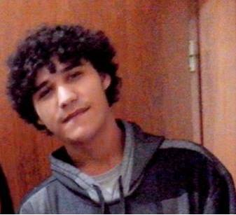

Curriculo

Dados Pessoais:
Nome:
William Basseto Sena
Data de Nascimento:
13/11/1995
Endereço:
Arthur Monfredinho - Jandaia do Sul
Telefone:
(44)9929-0438
Formação:
Ciencia da Computação
- Cursando
Instituição:
Fafiman
Conclusão prevista:
2018
Ciencias Contábeis
- Incompleto
Instituição:
Fafijan
Segundo Semestre Completo
Histórico Profissional
2010 - 2012
Empresa:
Digital informática
Função:
Atendente
2013 - 2013
Empresa:
Command Perfect
Função:
Suporte ao Usuário
2015 - 2016
Empresa:
Brochweld Vistorias
Função:
Avaliador de Veículos
Estágios
2009 - 2010
Empresa:
Virtual Vip
Função:
Auxiliar em Montagem e
manutenlçao de computadores
2016 - Atual
Empresa:
Romagnole
Função:
Desenvolvedor de sistemas
Curso Complementares
Hardware, Montagem e
Manutenlçao de computadores
- Conclusção 2008
Virtual Vip
Marialva
Rotinas Admnistrativas
- Conclusção 2008
Microcamp
Maringá
Método Interativo de
gestão de Quatro Passos - PDCA
- Conclusção 2013
Fafiman
Mandaguari
Computação Quantica
- Conclusção 2014
Fap
Apucarana
Introdução a Boodstrap
- Conclusção 2015
UTFPR
Jandaia do Sul